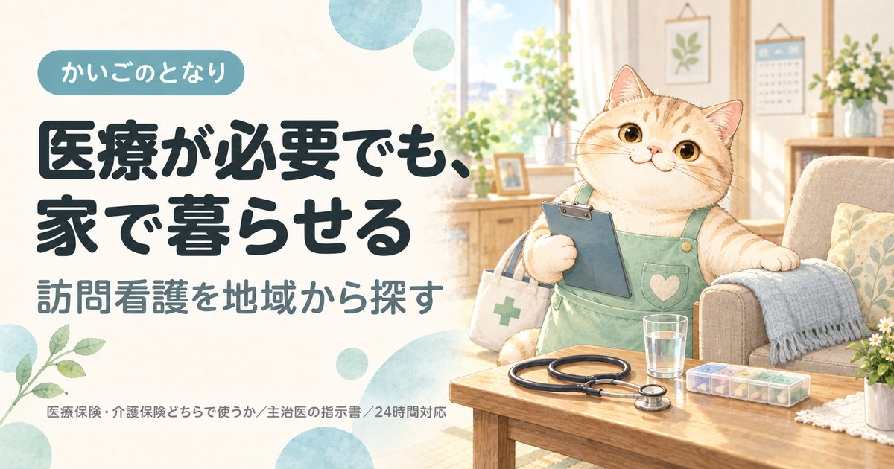

世田谷区の訪問看護ステーション一覧｜選び方と始め方
事業所一覧へ（119件）
東京都世田谷区で訪問看護を探している方へ。区内にあるステーション119件すべてを電話番号・地図つきで掲載し、そのうち日曜日も定期訪問があるのは34件であることまで示しました。主治医の指示書から利用開始までの流れもまとめています。訪問看護は事業所選びより先に主治医への相談が要ります。
目次
数字で見る世田谷区の訪問看護
- 区内の事業所
- 119件23区中2位（多い順）
- 65歳以上1万人あたり
- 6.2件23区中14位（多い順）
- 高齢化率
- 20.7%23区中10位（高い順）
- 要介護・要支援の認定
- 43,227人65歳以上の22.2%
事業所数は東京都福祉局の指定事業所一覧（2026年9月1日時点）、人口は住民基本台帳（2026年1月1日時点）から計算。区の統計をくわしく見る
世田谷区で訪問看護を探すとき、最初に押さえること
世田谷区には訪問看護ステーションが約119件あります。区内の数が多い一方、対応できる医療処置はステーションごとに違います。訪問介護と違い、事業所選びより先に主治医の指示書が要ります。相談の順番を間違えると、ここで止まります。
①主治医（かかりつけ医・入院先）に「自宅で訪問看護を使いたい」と伝える → ②ステーションを決める → ③主治医が訪問看護指示書を出す → ④契約・初回訪問。入院中なら、退院支援・地域連携の窓口に相談するのが最短です。
世田谷区の相談窓口はあんしんすこやかセンター（区内28か所）です。世田谷区では地域包括支援センターを「あんしんすこやかセンター」と呼び、区内各地に設置しています。主治医が決まっていない場合や、どのステーションがよいか分からない場合は、まずここで相談できます。
医療保険と介護保険のどちらになるか、回数と時間の上限、訪問介護との違いは訪問看護を地域から探すにまとめています。世田谷区に限らず全国共通の内容です。
世田谷区の訪問看護ステーション一覧
世田谷区内で指定を受けている訪問看護ステーション119件をすべて掲載しています（東京都公表・2026年9月1日時点）。区内には119件が指定を受けており、そのすべてを掲載しています。掲載順は事業所の優劣を示すものではありません。
119 / 119件を表示
「場所」は事務所の所在地です。訪問サービスは近くの町からも来てもらえます。
提供曜日の記載がない16件は、曜日で絞ると表示されません。
1ナーシングケア自由が丘
奥沢5-33-13サロン・ド・テ自由が丘2FＡＢＵＮＤＡＮＣＥ株式会社
事業所番号 1361090150
2訪問看護ステーションしもきたざわ
代田6-6-9アルコーブ下北沢B1特定非営利活動法人ホームケアエクスパーツ協会
事業所番号 1361290016
3ソフィアメディ訪問看護ステーション経堂
宮坂3-12-17HLビル5階ソフィアメディ株式会社
事業所番号 1361290065
4ソフィアメディ訪問看護ステーション成城
成城2-36-17DUPLEX成城1階ソフィアメディ株式会社
事業所番号 1361290099
5みなみ東京訪問看護ステーション
下馬6-12-15 2F株式会社ウェリナ
事業所番号 1361290156
6トータルライフケア用賀訪問看護ステーション
用賀2-29-16のぎくメモリアルビル101株式会社トータルライフケア
事業所番号 1361290164
7医療法人社団 輝生会 訪問看護ステーション 成城リハケア
祖師谷3-8-7ガーデン成城ビル1階医療法人社団輝生会
事業所番号 1361290172
8医療法人社団プラタナス ナースケア・リビング世田谷中町
中町5-9-9グランクレール世田谷中町コミュニティプラザ4階医療法人社団プラタナス
事業所番号 1361290198
9訪問看護ステーション三軒茶屋
太子堂2-4-16テラスコート三軒茶屋201社会福祉法人世田谷区社会福祉事業団
事業所番号 1361290230
10ノーツ訪問看護ステーション
代沢4-43-7ノーツナーシングコーポレーション株式会社
事業所番号 1361290255
11せたがや訪問看護ステーション
世田谷3-3-3グランドステータス世田谷2階株式会社みゆき
事業所番号 1361290263
12ソフィアメディ訪問看護ステーション芦花公園
南烏山3-21-11ヴェルディ南烏山3階ソフィアメディ株式会社
事業所番号 1361290271
14ケアパートナー梅ヶ丘訪問看護ステーション
梅丘1-27-12ケアパートナー株式会社
事業所番号 1361290321
15医療法人社団美誠会訪問看護ステーション サンセール世田谷大蔵
大蔵1-3-22医療法人社団美誠会
事業所番号 1361290339
16訪問看護ステーション ノテ東京
深沢7-17-20社会福祉法人ノテ福祉会
事業所番号 1361290347
17指定訪問看護 アットリハ若林
若林2-17-9第二エメラルド青木ビル301号株式会社ＡＴ
事業所番号 1361290370
18シーエルポート世田谷
上用賀1-9-10用賀立昇苑 イースト株式会社創生事業団
事業所番号 1361290438
19ホームナーシング モア世田谷用賀
玉川台2-17-2株式会社ｍｏｒｅ
事業所番号 1361290453
20グッド訪問看護ステーション
喜多見7-27-19リバーサイド成城パレス305株式会社グッドパートナーズ
事業所番号 1361290487
21訪問看護ステーション デューン世田谷
池尻3-22-4池尻大橋ビル5階株式会社Ｎ・フィールド
事業所番号 1361290495
22ソフィアメディ訪問看護ステーション二子玉川
玉川4-8-7ソフィアメディ株式会社
事業所番号 1361290511
23在宅療養支援ステーション楓の風 世田谷
世田谷3-17-15古谷マンション2階202号室楓の風在宅療養支援株式会社
事業所番号 1361290529
24おうちのカンゴ
弦巻5-17-10弦巻5丁目戸建B株式会社メディステップ
事業所番号 1361290578
25あむ訪問看護ステーション
経堂2-6-6小松ビル2F株式会社ＡＬＴＷＥＬＬＮＵＲＳＥ
事業所番号 1361290586
26りはっぴぃの訪問看護
新町2-35-27株式会社りはっぴぃ
事業所番号 1361290594
27訪問看護リハビリステーション七つの海
玉川台2-31-19By the forest B号室株式会社琉球マインド
事業所番号 1361290610
28訪問看護ステーションふくろう等々力
等々力3-5-11ライオンズマンション等々力第5-203号室医療法人社団創福会
事業所番号 1361290644
29医療法人社団プラタナス 松原ナースケア・ステーション
松原5-34-6医療法人社団プラタナス
事業所番号 1361290669
31こころのホームクリニック世田谷 ナースステーション
北烏山3-5-9日栄ビル2階201号室医療法人社団リカバリー
事業所番号 1361290685
32はなまる会訪問看護ステーション
給田3-31-20OnCo千歳烏山1階医療法人社団はなまる会
事業所番号 1361290693
33なの花訪問看護ステーション千歳台
千歳台5-18-9株式会社メディカルシステムネットワーク
事業所番号 1361290719
34いちから訪問看護ステーション
経堂2-27-20リリーオブザバレー102号室有限会社スズコンタクトレンズ
事業所番号 1361290776
35医療法人社団医真会 ＳＨＣ訪問看護ステーション
粕谷4-19-5塩原ビル2階医療法人社団医真会
事業所番号 1361290800
36経堂ふくろう訪問看護リハビリステーション
経堂2-23-21株式会社Ｋ＆Ｎ－ＮＥＸＴ
事業所番号 1361290818
38リニエ訪問看護ステーションキッズ世田谷
南烏山5-32-14アルファビル2 302株式会社リニエＲ
事業所番号 1361290859
40訪問看護ステーション デライト桜新町
弦巻4-2-3塚本ルミネビル 1-B株式会社Ｈ＆Ｈホールディングス
事業所番号 1361290883
41訪問看護ステーション梅ヶ丘
松原6-37-1一般財団法人脳神経疾患研究所
事業所番号 1361290891
44ルミナス訪問看護ステーション
砧6-29-4 3Fジャンティー株式会社
事業所番号 1361290941
45桜十字訪問看護ステーション世田谷八幡山
桜上水5-5-29ベルクール桜上水212号室株式会社桜十字
事業所番号 1361290974
46訪問看護ステーション いぶき三軒茶屋
三軒茶屋2-19-16メゾンレスポアール305号医療法人社団柏水会
事業所番号 1361290982
47トータルライフケア烏山訪問看護ステーション
南烏山5-3-3Nasicフローラコート世田谷1F No．2株式会社トータルライフケア
事業所番号 1361290990
48訪問看護ステーション デライト烏山
南烏山6-28-5ミルフィーユⅠ 2F株式会社Ｈ＆Ｈホールディングス
事業所番号 1361291014
49成城克歩訪問看護ステーション
成城1-13-2ゲミュートリヒ成城101号室医療法人社団さくら会
事業所番号 1361291022
50カンデラ・メディカルケア世田谷本店
奥沢6-25-1カンデラ・メディカルケア株式会社
事業所番号 1361291030
51アベリア訪問看護ステーション
松原5-60-2株式会社アベリア
事業所番号 1361291048
52つぐみナースケアステーション
中町1-17-14メゾンブランシュ104株式会社鳥人会
事業所番号 1361291055
54ネットワーク訪問ナースステーション
松原2-41-15エテルノ明大前203有限会社オフィスネットワーク
事業所番号 1361291097
55ライフ訪問看護ステーション駒澤
駒沢2-11-1駒沢フォーラムガーデン801株式会社ＡＲＣＷＥＬＬ
事業所番号 1361291113
57ライフ訪問看護ステーション経堂
宮坂3-4-1ライオンズマンション経堂406株式会社ＡＲＣＷＥＬＬ
事業所番号 1361291162
58ソフィアメディ訪問看護ステーション代田
羽根木1-19-6シャトルHIEI羽根木 3-Aソフィアメディ株式会社
事業所番号 1361291170
59マイナビ訪問看護ステーション 祖師谷
祖師谷3-8-10 1階株式会社マイナビナースケア
事業所番号 1361291188
60訪問看護 カラフルステーション
砧3-28-18清水ハイツ202株式会社ラ・ファミーユ
事業所番号 1361291196
61医療法人社団プラタナス 桜新町ナースケア・ステーション
上用賀5-12-11 301医療法人社団プラタナス
事業所番号 1361291212
62訪問看護リハビリステーション あくあ
代沢2-47-9Grace Field池ノ上304号室株式会社ＹＯＲＩＩ
事業所番号 1361291220
65訪問看護ステーション デライト尾山台
尾山台3-33-5須摩ビル201号室株式会社Ｈ＆Ｈホールディングス
事業所番号 1361291253
66ブルーベリー訪問看護リハビリステーション
代田2-21-18ガーデン代田202号室ＳＧサービス株式会社
事業所番号 1361291261
67訪問看護リハビリステーション東京敬寿園
上祖師谷7-1-1社会福祉法人敬寿会
事業所番号 1361291279
68訪問看護ステーションみかん
太子堂2-14-20ステップス三軒茶屋205号室株式会社みかん
事業所番号 1361291295
69ソフィアメディ訪問看護ステーション等々力
等々力8-25-16 201号室ソフィアメディ株式会社
事業所番号 1361291303
70ハイメディック訪問看護ステーション
玉川台2-21-14KY用賀ビル1F株式会社ハイメディック
事業所番号 1361291311
71マース訪問看護ステーション千歳船橋
船橋4-5-7株式会社ＭＡＲＳ
事業所番号 1361291329
72訪問看護ステーション デライト下高井戸
赤堤5-32-2アーバン赤堤ビル2階203号室株式会社Ｈ＆Ｈホールディングス
事業所番号 1361291337
73訪問看護ステーション デューン烏山
南烏山6-29-6栗原ビル101号室株式会社Ｎ・フィールド
事業所番号 1361291345
74ほっとナビ訪問看護ステーション 世田谷
松原1-46-9OHREM明大前 801号室株式会社ほっとナビ
事業所番号 1361291352
76ホームケア世田谷 訪問看護ステーション
上用賀1-22-23株式会社東急イーライフデザイン
事業所番号 1361291378
77祖師谷スキンケアステーション
祖師谷4-7-1株式会社ＫＣＳ
事業所番号 1361291386
78訪問看護ステーション和来 せたがや
粕谷4-20-18幸栄マンション311株式会社康臨丸
事業所番号 1361291394
79サンウェルズ用賀訪問看護ステーション
瀬田5-33-22株式会社サンウェルズ
事業所番号 1361291402
80あいず訪問看護ステーション三軒茶屋
太子堂2-1-1ヴァンヴェール世田谷105号室株式会社あいず
事業所番号 1361291428
81ソフィアメディ訪問看護ステーション千歳船橋
千歳台1-30-14 101号室ソフィアメディ株式会社
事業所番号 1361291436
82訪問看護ステーション 紅白せたがや
瀬田5-3-7第4盟友フラッツ2階株式会社ＡＧＲＩＣＡＲＥ
事業所番号 1361291444
83訪問看護ステーション ｈａｒｕ ｓｔｙｌｅ 世田谷
桜新町1-15-1チェリーハイム302合同会社Ｍａｉｓｏｎ８４
事業所番号 1361291469
84ｅｉｓｅｉ ｈｏｍｅ ｋａｎｇｏ
大蔵2-4-14-103株式会社ＥＩＳＥＩ
事業所番号 1361291485
87ひだまり訪問看護ステーション用賀
用賀4-23-12ユアハウス用賀2Ｓｈｉｎｙｌｉｆｅ株式会社
事業所番号 1361291519
88訪問看護ステーション陽だまり
祖師谷4-26-3アトリエンテ祖師谷B1階ＰｅａｋＣａｒｅ株式会社
事業所番号 1361291527
91訪問看護かえりえ上北沢
上北沢3-32-13 3階・4階株式会社やさしい手
事業所番号 1361291550
92トータルライフケア梅丘訪問看護ステーション
梅丘1-23-5ファインビル2F株式会社トータルライフケア
事業所番号 1361291568
93ベルケア千歳烏山訪問看護ステーション
南烏山4-3-8マノアール世田谷 102ＥＮ－ＣＯＬＯＲｂｅｌｌｅ－ｃａｒｅ合同会社
事業所番号 1361291576
94いろどり訪問看護ＲＣＵ世田谷
北烏山3-13-23烏山北住宅 304号室株式会社いろどり
事業所番号 1361291584
95＠コレモ訪問看護
上馬1-33-16小川ハイツ301株式会社Ｄ．ｐｏｄｓ
事業所番号 1361291592
96ふくまる訪問看護ステーション
喜多見9-4-7みのわグレースマンション403株式会社Ｒｅｙｂｓ
事業所番号 1361291600
97ショコラ訪問看護ステーション田園調布
玉川田園調布1-9-1壱番館101株式会社ユナイテッドパス
事業所番号 1361291618
98青藍会在宅医療支援センターハートハウス成城 訪問看護ステーション
成城2-34-1成城小泉ビルⅠ 201号室社会福祉法人青藍会
事業所番号 1361291626
100くすの木ステーション
奥沢3-18-10自由ケ丘ファースト 103号室株式会社ＡＤＶＡＬＥＳ
事業所番号 1361291642
101グリーンメディ訪問看護ステーション明大前
松原2-42-9美鈴Nビル402号室株式会社ライフタイムメディ
事業所番号 1361590142
102成城訪問看護ステーション
成城6-13-17社会福祉法人古木会
事業所番号 1367191430
103訪問看護ステーションけやき
世田谷1-23-2社会福祉法人世田谷区社会福祉事業団
事業所番号 1367191539
104訪問看護ステーション芦花
粕谷2-23-1社会福祉法人世田谷区社会福祉事業団
事業所番号 1367191547
105訪問看護ステーション青い鳥
奥沢7-12-25-2F医療法人社団青い鳥会
事業所番号 1367192511
106訪問看護ステーション北沢
羽根木1-31-21 ドクターズプラザ羽根木2階社会福祉法人世田谷区社会福祉事業団
事業所番号 1367192610
109医療法人社団 多聞会 訪問看護ステーションこあら
世田谷1-42-11医療法人社団多聞会
事業所番号 1367194558
110メディカル・ハンプ 訪問看護ステーション
南烏山5-23-11エビスビル1F株式会社メディカル・ハンプ
事業所番号 1367195027
111セコム世田谷訪問看護ステーション
松原1-46-9OHREM明大前301セコム医療システム株式会社
事業所番号 1367196017
112訪問看護ステーションきたざわ苑
北沢5-24-18社会福祉法人正吉福祉会
事業所番号 1367196041
113トータルライフケア奥沢 訪問看護ステーション
奥沢3-45-6鈴木第一ビル1F株式会社トータルライフケア
事業所番号 1367196298
114ソフィアメディ訪問看護ステーション自由が丘
奥沢7-33-2アーバンコート自由が丘201ソフィアメディ株式会社
事業所番号 1367197585
115そよかぜ訪問看護ステーション上北沢
上北沢4-16-11 4F株式会社まごころ
事業所番号 1367197858
116下馬訪問看護ステーション
下馬6-23-13アーバンテラス下馬107有限会社ハート・２１
事業所番号 1367198070
117訪問看護ステーション お天気
宮坂2-26-26宮坂ハイム501有限会社幸せ在宅計画社
事業所番号 1367198120
118ソフィアメディ訪問看護ステーション三宿・三茶
太子堂4-30-22K’sアパートメント202ソフィアメディ株式会社
事業所番号 1367198153
119ソフィアメディ訪問看護ステーション用賀
玉川台2-22-20イイダアネックス7 304ソフィアメディ株式会社
事業所番号 1367198955
条件に合う事業所はありません。条件を1つ外してみてください。
上記119件は、2026-09-21に世田谷区および各事業者の公表情報で確認した内容です。営業時間・対応エリア・空き状況は変動しますので、連絡の前に必ず公式情報をご確認ください。掲載内容の訂正・削除は、お問い合わせからご依頼いただければ理由の説明なしで削除します。
掲載119事業所の内訳
掲載している119件を町域別に見ると、多いのは南烏山（8件）、松原（7件）、奥沢（6件）です。運営法人は営利法人が93件で最も多くなっています。日曜日もサービスを提供しているのは、曜日が分かる103件のうち34件（33％）で、23区のなかでは10番目の割合になります。
所在町域
訪問看護も、ステーションから通える範囲が実質的な対応エリアになります。世田谷区内は59の町域に分かれています。
町域ごとの事業所名を見る（47町域）
| 町域 | 掲載事業所 |
|---|---|
| 南烏山 | ソフィアメディ訪問看護ステーション芦花公園、リニエ訪問看護ステーションキッズ世田谷、トータルライフケア烏山訪問看護ステーション、訪問看護ステーション デライト烏山、訪問看護ステーション デューン烏山、いのり訪問看護ステーション、ベルケア千歳烏山訪問看護ステーション、メディカル・ハンプ 訪問看護ステーション |
| 松原 | 医療法人社団プラタナス 松原ナースケア・ステーション、訪問看護ステーション梅ヶ丘、アベリア訪問看護ステーション、ネットワーク訪問ナースステーション、ほっとナビ訪問看護ステーション 世田谷、グリーンメディ訪問看護ステーション明大前、セコム世田谷訪問看護ステーション |
| 奥沢 | ナーシングケア自由が丘、カンデラ・メディカルケア世田谷本店、くすの木ステーション、訪問看護ステーション青い鳥、トータルライフケア奥沢 訪問看護ステーション、ソフィアメディ訪問看護ステーション自由が丘 |
| 成城 | ソフィアメディ訪問看護ステーション成城、マザース成城、成城克歩訪問看護ステーション、訪問看護かえりえ成城、青藍会在宅医療支援センターハートハウス成城 訪問看護ステーション、成城訪問看護ステーション |
| 世田谷 | せたがや訪問看護ステーション、在宅療養支援ステーション楓の風 世田谷、訪問看護ステーションけやき、克歩訪問看護ステーション、医療法人社団 多聞会 訪問看護ステーションこあら |
| 太子堂 | 訪問看護ステーション三軒茶屋、訪問看護ステーションみかん、あいず訪問看護ステーション三軒茶屋、医療法人財団 青葉会 太子堂訪問看護ステーション、ソフィアメディ訪問看護ステーション三宿・三茶 |
| 祖師谷 | 医療法人社団 輝生会 訪問看護ステーション 成城リハケア、マイナビ訪問看護ステーション 祖師谷、祖師谷スキンケアステーション、訪問看護ステーション陽だまり、医心館 訪問看護ステーション 祖師谷 |
| 宮坂 | ソフィアメディ訪問看護ステーション経堂、医心館 訪問看護ステーション 経堂、ライフ訪問看護ステーション経堂、訪問看護ステーション お天気 |
| 玉川台 | ホームナーシング モア世田谷用賀、訪問看護リハビリステーション七つの海、ハイメディック訪問看護ステーション、ソフィアメディ訪問看護ステーション用賀 |
| 経堂 | あむ訪問看護ステーション、いちから訪問看護ステーション、経堂ふくろう訪問看護リハビリステーション、ｅ笑顔 |
| 上用賀 | シーエルポート世田谷、医療法人社団プラタナス 桜新町ナースケア・ステーション、ホームケア世田谷 訪問看護ステーション |
| 下馬 | みなみ東京訪問看護ステーション、アライブ世田谷下馬 訪問看護ステーション、下馬訪問看護ステーション |
| 梅丘 | ケアパートナー梅ヶ丘訪問看護ステーション、スーパーキッズ訪問看護ステーション、トータルライフケア梅丘訪問看護ステーション |
| 玉川 | ソフィアメディ訪問看護ステーション二子玉川、つづる訪問看護ステーション、訪問看護ファミリー・ホスピス００１ |
| 用賀 | トータルライフケア用賀訪問看護ステーション、訪問看護かえりえ用賀、ひだまり訪問看護ステーション用賀 |
| 粕谷 | 医療法人社団医真会 ＳＨＣ訪問看護ステーション、訪問看護ステーション和来 せたがや、訪問看護ステーション芦花 |
| 上北沢 | 訪問看護かえりえ上北沢、そよかぜ訪問看護ステーション上北沢 |
| 上祖師谷 | 訪問看護リハビリステーション東京敬寿園、訪問看護ファミリー・ホスピス成城 |
| 中町 | 医療法人社団プラタナス ナースケア・リビング世田谷中町、つぐみナースケアステーション |
| 代沢 | ノーツ訪問看護ステーション、訪問看護リハビリステーション あくあ |
| 代田 | 訪問看護ステーションしもきたざわ、ブルーベリー訪問看護リハビリステーション |
| 北烏山 | こころのホームクリニック世田谷 ナースステーション、いろどり訪問看護ＲＣＵ世田谷 |
| 千歳台 | なの花訪問看護ステーション千歳台、ソフィアメディ訪問看護ステーション千歳船橋 |
| 喜多見 | グッド訪問看護ステーション、ふくまる訪問看護ステーション |
| 大蔵 | 医療法人社団美誠会訪問看護ステーション サンセール世田谷大蔵、ｅｉｓｅｉ ｈｏｍｅ ｋａｎｇｏ |
| 弦巻 | おうちのカンゴ、訪問看護ステーション デライト桜新町 |
| 瀬田 | サンウェルズ用賀訪問看護ステーション、訪問看護ステーション 紅白せたがや |
| 砧 | ルミナス訪問看護ステーション、訪問看護 カラフルステーション |
| 等々力 | 訪問看護ステーションふくろう等々力、ソフィアメディ訪問看護ステーション等々力 |
| 給田 | はなまる会訪問看護ステーション、訪問看護かえりえ給田 |
| 羽根木 | ソフィアメディ訪問看護ステーション代田、訪問看護ステーション北沢 |
| 駒沢 | 訪問看護ステーションワイズメンタル、ライフ訪問看護ステーション駒澤 |
| 三軒茶屋 | 訪問看護ステーション いぶき三軒茶屋 |
| 上馬 | ＠コレモ訪問看護 |
| 北沢 | 訪問看護ステーションきたざわ苑 |
| 大原 | 株式会社 東京精神訪問看護ステーション |
| 尾山台 | 訪問看護ステーション デライト尾山台 |
| 新町 | りはっぴぃの訪問看護 |
| 桜 | まなか訪問看護ステーション |
| 桜上水 | 桜十字訪問看護ステーション世田谷八幡山 |
| 桜新町 | 訪問看護ステーション ｈａｒｕ ｓｔｙｌｅ 世田谷 |
| 池尻 | 訪問看護ステーション デューン世田谷 |
| 深沢 | 訪問看護ステーション ノテ東京 |
| 玉川田園調布 | ショコラ訪問看護ステーション田園調布 |
| 船橋 | マース訪問看護ステーション千歳船橋 |
| 若林 | 指定訪問看護 アットリハ若林 |
| 赤堤 | 訪問看護ステーション デライト下高井戸 |
運営法人の種別
掲載119件のうち営利法人が93件と最も多く、母体が医療機関である医療法人は15件です。
| 法人の種別 | 件数 | 傾向 |
|---|---|---|
| 営利法人 | 93件 | 株式会社・有限会社など。住宅街の中の小規模な事業所が多い |
| 医療法人 | 15件 | 病院・診療所が母体。健康面の変化に気づいてもらいやすい |
| 社会福祉法人（社協以外） | 9件 | 特別養護老人ホームなどに併設されていることが多く、設備が整っている |
| 社団・財団 | 1件 | 公益性の高い運営。地域の事情に通じているところが多い |
| 非営利法人（NPO） | 1件 | 地域に密着した小規模な運営が中心 |
開設からの年数
掲載119件のうち、指定から20年以上の事業所は17件、直近3年以内に指定を受けた事業所は23件です。
| 指定を受けた時期 | 件数 | 見るときの目安 |
|---|---|---|
| 直近3年以内 | 23件 | 設備が新しく、空きがあることが多い |
| 3〜10年 | 50件 | 運営が固まってきた時期。空き状況は事業所ごとに差が大きい |
| 10〜20年 | 29件 | 利用者が定着している。空きは出にくい |
| 20年以上 | 17件 | 制度の初期から続いている。地域での評判を聞きやすい |
指定年月日は東京都が公表している指定事業所一覧の値です。移転や法人変更で指定を取り直している場合があるため、実際の営業年数とは一致しないことがあります。
定期訪問のある曜日
掲載119件のうち、日曜日も対応するところが34件、土曜日まで含めると56件です。残る16件は公表データに記載がありません。平日だけのステーションが多いのが実情で、世田谷区でも週末に処置が必要な方はここで先に絞ることになります。
| サービス提供日 | 件数 | こんな方に |
|---|---|---|
| 日曜日も | 34件 | 週末も家族が休めない場合の受け皿 |
| 土曜日まで | 22件 | 日曜だけ別の手段が要る |
| 平日のみ | 47件 | 土日はほかと組み合わせる |
| 記載なし | 16件 | 公表データに記載なし。直接ご確認を |
世田谷区での自己負担の目安
介護保険でステーションから来てもらう場合、1割負担で30分未満が約537円、30分〜1時間が約939円（東京23区・基本報酬のみ）。医療保険になるケースや訪問介護との違いは訪問介護と訪問看護の違いで説明しています。
問い合わせの前に確認しておくこと
世田谷区のステーションに電話をかける前に、次の4点を手元に用意しておくと話が早く進みます。
- 主治医の名前と医療機関名指示書を書いてもらう医師が決まっているかどうかで、ステーション側の動き方が変わります。未定ならその旨を伝えてください。
- 必要な医療処置点滴、インスリン、たんの吸引、床ずれの処置、胃ろう、在宅酸素、人工呼吸器、ストーマなど。対応できるかはステーションごとに違います。
- ご自宅の町名・番地同じ世田谷区内でも対応する町域が違います。緊急時の到着時間にも直結します。
- 要介護認定の状況認定済みなら要介護度を、申請中ならその旨を。未申請でも、医療保険で先に始められる場合があります。
よくある質問
世田谷区で訪問看護を使うには、まず何をすればいいですか？
主治医に「自宅で訪問看護を使いたい」と伝えるのが最初の一歩です。訪問看護は主治医の指示書がないと始められないため、世田谷区のステーションに直接連絡してもそこで止まります。入院中なら退院支援の窓口、主治医が決まっていなければあんしんすこやかセンターが相談先です。
世田谷区には訪問看護ステーションが何件ありますか？
東京都が公表している指定事業所一覧では、2026年9月1日時点で世田谷区内に119件の訪問看護ステーションが指定を受けています。本ページでは119件すべてを連絡先つきで掲載しています。
世田谷区の掲載事業所は、どこを見て絞り込めばいいですか？
まず必要な医療処置に対応できるかで絞り、次に距離で絞るのが順番です。世田谷区の掲載119件では営利法人が93件、医療法人が15件、指定から20年以上の事業所が17件です。そのうえで、ご自宅の町名を伝えて世田谷区内の対応エリアに入っているかを確認してください。
世田谷区の高齢化率は20.7%、要介護認定を受けている人は43,227人
世田谷区の人口928,666人のうち、65歳以上は192,309人（20.7%）です。23区の平均20.2%より高い水準にあたります。65歳以上のうち110,807人は75歳以上で、介護が必要になる人が増えはじめる年代です。
| 項目 | 世田谷区 |
|---|---|
| 総人口 | 928,666人 |
| 65歳以上（高齢化率） | 192,309人（20.7%） |
| うち75歳以上 | 110,807人（11.9%） |
| 第1号被保険者（65歳以上） | 194,438人 |
| 要支援1・2の認定 | 11,693人 |
| 要介護1〜5の認定 | 31,534人 |
| 認定率（認定者÷第1号被保険者） | 22.2%（23区平均21.9%） |
世田谷区で要介護・要支援の認定を受けているのは43,227人、区内の訪問看護は119件なので、1事業所あたり363人という計算になります。認定者が全員このサービスを使うわけではないため、混み具合そのものではありません。
認定者数は第1号被保険者（65歳以上）の再掲値で、40〜64歳の方は含みません。出典はページ下部に記載しています。
世田谷区の町域一覧（対応エリアの目安）
世田谷区の町域は59。五十音では9行にわたり、最も多いのはか行の15件です。掲載事業者の対応範囲は町域単位で分かれているため、問い合わせのときは「世田谷区池尻」のように町名まで伝えてください。
- 赤堤
- 池尻
- 宇奈根
- 梅丘
- 大蔵
- 大原
- 岡本
- 奥沢
- 尾山台
- 粕谷
- 鎌田
- 上馬
- 上北沢
- 上祖師谷
- 上野毛
- 上用賀
- 北烏山
- 北沢
- 喜多見
- 砧
- 給田
- 経堂
- 駒沢
- 豪徳寺
- 桜
- 桜丘
- 桜新町
- 桜上水
- 三軒茶屋
- 下馬
- 新町
- 成城
- 瀬田
- 世田谷
- 祖師谷
- 太子堂
- 玉川
- 玉川台
- 玉川田園調布
- 玉堤
- 代沢
- 代田
- 千歳台
- 弦巻
- 等々力
- 中町
- 野毛
- 野沢
- 八幡山
- 羽根木
- 東玉川
- 深沢
- 船橋
- 松原
- 三宿
- 南烏山
- 宮坂
- 用賀
- 若林
※町域ごとの事業者ページは、掲載できる事業者が3件以上そろった町域から順次公開します。
世田谷区の他のサービスを探す
東京23区から訪問看護を探す
- 東京都福祉局「居宅サービス事業所一覧」（CC BY 4.0）
- 厚生労働省「介護サービス情報公表システム」オープンデータ（2026年6月30日時点／サービス提供日・公式サイト）
- 世田谷区「あんしんすこやかセンター一覧」
- 厚生労働大臣が定める疾病等（訪問看護で医療保険が適用される範囲）
- 厚生労働省「指定居宅サービス介護給付費単位数の算定構造」訪問看護費／介護報酬の地域区分（1級地・1単位11.40円）
- 日本郵便 郵便番号データにもとづく世田谷区の町域一覧
- 東京都総務局統計部「住民基本台帳による東京都の世帯と人口」（令和8年1月1日現在／年齢3区分別人口・5歳階級別人口）
- 東京都福祉局「介護保険事業状況報告（月報）」令和8年6月分（保険者別・第1号被保険者数／要介護認定者数）
- 区内事業所数：東京都公表の指定事業所一覧にもとづく実数（2026年9月1日時点）
最終確認日：2026-09-21／制度・料金は改定される場合があります。ご利用前に各窓口・各事業者で最新情報をご確認ください。